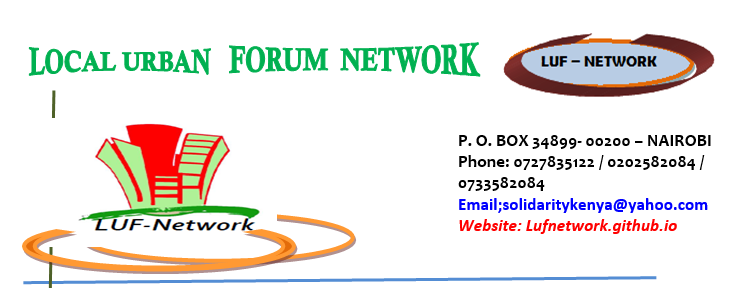

Get In Touch"We are dedicated to building communities, empowering individuals, and creating lasting social impact. At LUF NETWORK, our goal is to support people through sustainable community programs, education, and direct resources."
Our comprehensive structural framework driving targeted resource distribution, social justice, and urban community resilience.
Providing food security distributions, clean clothing networks, and critical emergency response resources to families navigating urgent financial crises and systemic hardships.
Hosting structured community classes, digital literacy bootcamps, and professional vocational training sessions aimed at equipping marginalized individuals to secure sustainable careers.
Standing firmly at the forefront of social justice to protect fundamental human rights, promote legal equality, amplify vulnerable voices, and lobby for institutional policy improvements.
Deploying mobile medical clinics to deliver essential primary healthcare access while running stigma-free mental health support spaces, community counseling networks, and psychological wellness training.
Spearheading hyper-local green initiatives, trash management programs, urban clean-ups, and ecological conservation workshops to create clean, climate-resilient neighborhoods for future generations.
Providing micro-grants, startup equipment seed kits, and micro-enterprise business mentorship programs to help local youth and women launch micro-ventures and foster local financial independence.
Developing local disaster-preparedness emergency strategies, urban flash flood management channels, and hazard relief networks to insulate dense communities from systemic structural dangers.
Advancing targeted structural protective channels for marginalized groups, inclusive urban civic workshops, and equal protection mechanisms across community sectors.
Bridging localized field operations with ministerial review boards, global health entities, and structural hospital administrative frameworks to scale urban community response maps.
1 Dry Food Parcel
Feeds an urban family for 2 weeks
Mental Health Outreaches
Funds 1 community peer-counseling circle
Field Assessments & Tracking
Deploys a 3-person responder team to execute structural field matrix tracking and data metrics for one week
Follow the official Local Urban Forum Network (LUF NETWORK) feed for immediate announcements, structural updates, and city-wide advocacy trackers.
Support our field matrix operations and community psychiatric safety tracks via M-Pesa mobile transfer directly to our official Custodian and Program Coordinator:
Operational Brief: Multi-Sectoral Health Equity & Grassroots Tracking Frameworks
Current Focus: LUF-Neurotorium Phase 1 Preparations & Ward-Level Logistics Sync
Primary Activity: Formulating technical clinical protocols and equipment safety compliance parameters for the upcoming LUF-Neurotorium Initiative (2027–2030).
Primary Activity: Conducting site compatibility reviews and field tracking loops across target Level 2 and Level 3 public healthcare facilities.
Primary Activity: Overseeing institutional compliance updates and data structural divisions within the LUF Network digital registry.
🏢 Mathari Operational Sector: Financial tracking verification was successfully finalized for the upcoming LUF-Neurotorium Initiative. The framework locks in a Strict Zero-Cost Safeguard, ensuring 0% budget liability for the hospital, with all mobile training kits and logistics funded entirely by the external DKK 300,000 grant.
⚖️ Community Advocacy Sector: LUF field officers successfully conducted exactly two grassroots community legal aid open forums in Kibera and Mathare Valley, reaching local residents to improve awareness of municipal human rights protection channels.
💼 Youth Economic Empowerment Sector: On-the-ground enrollment has officially opened for our upcoming Quarter 3 Youth Micro-Enterprise Mentorship tracks, aimed at driving financial independence for local youth cohorts.